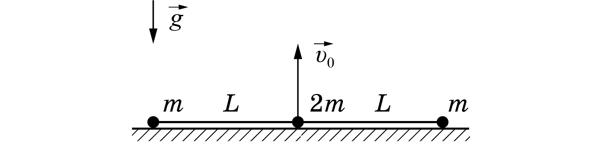
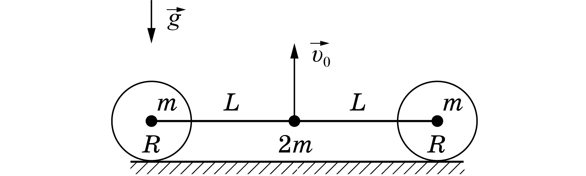

X21 (2021) — English translation
On a smooth horizontal surface lies a “double dumbbell,” a system consisting of two light rods of length $L$ connected by a mass hinge $2m$. Loads of mass $m$ are attached to the free ends of the rods. In this problem, the motion of this system is studied under different conditions.
At the initial moment, the weights and the hinge lie on the same straight line. At some point, one of the rods begins to rotate with a constant angular velocity $\omega$, and the load at its end is motionless all the time. In this part of the problem, it is necessary to find the angular velocity of rotation of the second rod at different moments of movement. Consider it known that angular velocity is a vector quantity directed perpendicular to the plane of motion (for the first rod it is codirectional with the $OZ$ axis and is equal to $\vec\omega$). Also consider known the law of addition of angular velocities $$\vec\omega=\vec\omega_{отн}+\vec\omega_{пер} $$ где $\vec\omega_{ln}$ - угловая скорость вращающейся системы отсчёта, $\vec\omega_{rel}$ - angular velocity motion relative to a rotating reference frame.
Let's move to a rotating reference system associated with the first rod. In a rotating reference frame, centrifugal and Coriolis forces act on the load of the second rod in the plane of motion, in addition to its tension force. The influence of the Coriolis force in this problem does not need to be taken into account, since it is perpendicular to the speed of the load and does not change its kinetic energy. Let us recall the expression for the centrifugal force $$\vec{F_{цб}}=m{\omega}^2\vec{r} $$ где $\vec{r}$ - the radius vector of the load in a rotating reference system, drawn from the origin.
Now you have to calculate the speed of the load in a fixed frame of reference. Use the law of addition of velocities for rotating frames of reference.
In this part of the problem, at the initial moment of time, the weights and the hinge are on the same straight line and the hinge is imparted a speed $v_0$, directed vertically upward. You are invited to investigate the further movement of such a system. Let at some moment of time the rods form an angle $\varphi$ with the horizon. The $OX$ axis is directed horizontally, and the $OY$ axis is directed vertically upward.

This part of the problem is an actual continuation of the previous one. The difference is that now the loads are located in the centers of light elastic shells of radius $R<{L}$. It is assumed that the speed $v_0$ of the hinge is sufficient for the weights to come off the surface in part $B$. Let us denote by ${\varphi_0}$ the angle of the rods with the horizon at the moment of contact shells.

In the future, assume that the condition on $R$ obtained in the previous paragraph is satisfied.
Source: https://pho.rs/p/47